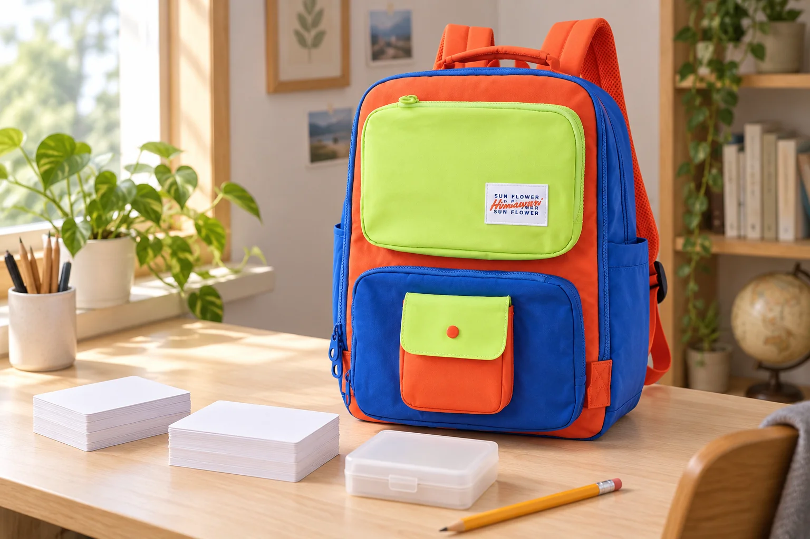

백팩 속 단어 카드, 오늘 다시 볼 묶음만 남기기

쉬는 시간에 보려고 챙긴 단어 카드가 매번 같은 순서로 나오기도 합니다. 연습을 마친 뒤 전부 한 더미로 합치면, 다음에 다시 보고 싶었던 카드도 그 안으로 돌아갑니다. 카드를 운반할 준비와 연습한 상태를 남기는 일을 함께 생각해보세요. 새 정리 도구를 더하기 전에 오늘 쓸 묶음부터 작게 정할 수 있습니다.
오늘 볼 카드와 집에 남길 카드를 나눕니다
카드 상자 전체를 옮기기 전에 오늘 다룰 범위를 고릅니다. 앞면만 보고 답을 떠올리는 방식이라면 뒷면이 먼저 드러나지 않도록 묶음의 방향을 맞추세요. 낱장을 바로 백팩 포켓에 넣기보다 크기에 맞는 닫히는 케이스를 사용합니다. 카드가 케이스 안에서 크게 휘거나 뚜껑에 끼지 않는지도 확인합니다.
연습할 때 두 자리만 비워둡니다
앉은 자리에서 꺼낸 카드를 보는 동안 ‘다음에 다시 볼 것’과 ‘이번에는 넘길 것’을 두 자리로 구분해 둡니다. 구분 기준은 본인이 하고 있는 연습 방식에 맞추면 됩니다. 테이블 공간이 좁다면 같은 케이스 안의 칸막이나 작은 구분 카드를 활용할 수 있습니다. 공용 테이블에서는 카드가 다른 사람의 책이나 물건 밑으로 들어가지 않도록 자신의 자리 안에서 펼칩니다.
가방을 닫기 전에 다시 볼 묶음을 표시합니다
연습을 끝낸 뒤에는 다시 볼 카드가 어느 쪽인지 남겨둡니다. 구분 카드에 짧게 적거나 케이스 안에서 정한 칸을 쓰는 정도면 됩니다. 표시 없이 두 더미를 합친 뒤 다음날 기억해내려 하지 않아도 됩니다. 카드에 고무줄을 세게 감아 모서리를 누르지 말고, 케이스를 닫은 상태로 가방에 넣습니다. 사용한 카드가 모두 돌아왔는지도 펼쳤던 자리를 한 번 보며 확인하세요.
다음번에는 표시한 묶음부터 꺼내봅니다
가방에서 케이스를 꺼내면 지난번에 남긴 표시를 먼저 봅니다. 범위를 바꾸었다면 이전 구분도 함께 고쳐 혼동을 줄이세요. 필기구는 카드 사이에 끼우지 않고 따로 둡니다. 사진에 참조한 No.8029의 외부 크기는 가로 27 × 세로 39 × 폭 14cm입니다. 카드 케이스를 둘 포켓은 실제 크기와 여밈을 확인해 고르고, 물기 있는 물건과 종이를 분리합니다.
참고·안내
- Himawari No.8029 제품 정보
- 실제 Himawari No.8029 블루라임 옵션을 참조한 AI 연출입니다. 카드와 케이스는 소품이며, 특정 학습 효과나 실측 수납을 보여주는 사진이 아닙니다.
자주 묻는 질문
카드를 많이 가져가면 더 잘 공부할 수 있나요?
이 글은 학습량이나 효과를 평가하지 않습니다. 오늘 쓸 범위를 정하고, 연습 뒤 다시 볼 카드를 구분해 남기는 정리 방법을 다룹니다.
구분용 케이스를 새로 사야 하나요?
가지고 있는 케이스가 카드 크기에 맞고 잘 닫힌다면 안쪽 구분 카드나 정한 칸을 먼저 활용해볼 수 있습니다.